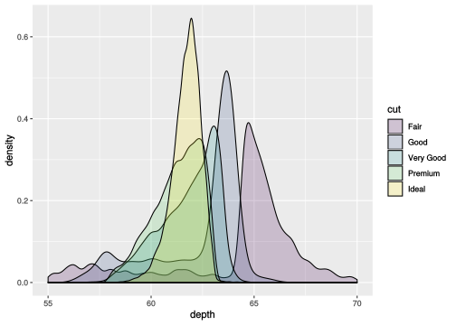
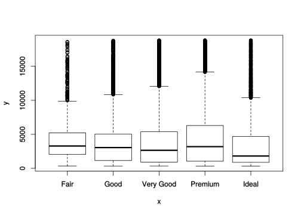
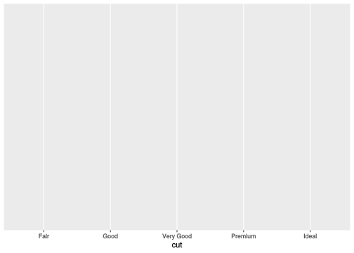
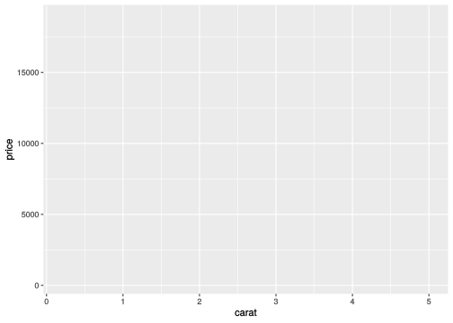
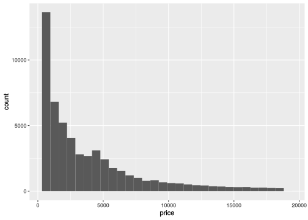
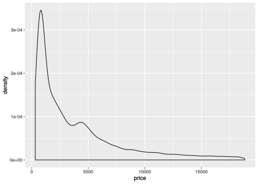
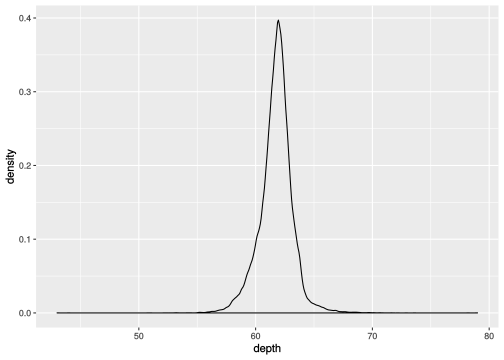
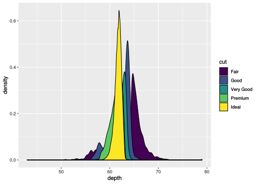
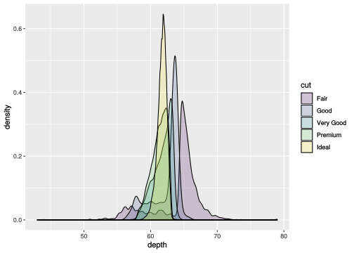

Visualizing Data
View as a slideshow.
Introduction
Today you’re going to learn how to make this:
library(ggplot2)
ggplot(diamonds, aes(depth, fill = cut)) + geom_density(alpha = 0.2) + xlim(55, 70)
It’s only going to take one line of code, but there are a few things we need to cover to understand it!
Tables: data.frame’s
One of the data sets that ggplot2 comes with is diamonds. Get a preview:
diamonds## # A tibble: 6 x 10
## carat cut color clarity depth table price x y z
## <dbl> <ord> <ord> <ord> <dbl> <dbl> <int> <dbl> <dbl> <dbl>
## 1 0.23 Ideal E SI2 61.5 55 326 3.95 3.98 2.43
## 2 0.21 Premium E SI1 59.8 61 326 3.89 3.84 2.31
## 3 0.23 Good E VS1 56.9 65 327 4.05 4.07 2.31
## 4 0.290 Premium I VS2 62.4 58 334 4.2 4.23 2.63
## 5 0.31 Good J SI2 63.3 58 335 4.34 4.35 2.75
## 6 0.24 Very Good J VVS2 62.8 57 336 3.94 3.96 2.48The diamonds variable holds a new type of data we haven’t seen before: this is a data.frame (well, technically it’s a tibble but we’re going to ignore that distinction for now). This is the data structure in R that you’ll nearly always use to represent a real data set: it’s two dimensional, rows represent observations, and each column represents a variable.
You can see how many observations a data set has with nrow:
nrow(diamonds)## [1] 53940That’s a few!
Each column on a data.frame is just a vector of values. To get the vector of data in a column you can use the short hand $ syntax:
diamonds$cut## [1] Ideal Premium Good Premium Good Very Good
## Levels: Fair < Good < Very Good < Premium < IdealYou can also use the longer form [[..]] syntax:
diamonds[['cut']]
diamonds[['cut']] == diamonds$cutNote the use of quotes with [[..]] but not with $. See what happens if you use single [...] on a data.frame column:
diamonds['cut']## # A tibble: 6 x 1
## cut
## <ord>
## 1 Ideal
## 2 Premium
## 3 Good
## 4 Premium
## 5 Good
## 6 Very GoodWhat did you get? What’s the difference between double and single brackets?
RStudio also has a very nice interface for inspecting a data.frame with the View function (note caps):
View(diamonds)Plotting
We can make basic plots with the plot function. Try passing plot two quantitative variables:
plot(diamonds$carat, diamonds$price)
What did you get?
Or a quantitative and categorical variable:
plot(diamonds$cut, diamonds$price)
What did you get there?
The plot function is a little bit magical. It will try very, very hard to draw something no matter what you pass it. But it doesn’t always choose well (if you want to crash your session run plot(diamonds)) and you don’t even want to know what you have to do to customize the output and make the plots pretty (see ?par). It’s an awesome function to try out when you’re first playing around with a new package or type of data, but you’ll quickly be ready to move onto something higher-level. That’s nearly always going to be ggplot2.
The ggplot2 package implements a semantic visualization framework. The idea here is to be systematic about separating and independently describing the fundamental components of a visualization. If you’ve ever been frustrated with the inscrutable choices that Excel makes when you try to make a plot, you’ll appreciate why this is important.
The first component of any plot is the data. You define the table by passing it as the first argument to the ggplot2 function:
ggplot(diamonds)And you get a beautiful empty box. Exciting! We’ll get there.
The second component of any plot is what you are going to visualize: which variables are you using and what relationship are you interested in? You do this by passing an “aesthetic mapping” as the second value to ggplot with the aes function.
Visualize the price variable:
ggplot(diamonds, aes(price))
Visualize the cut variable:
ggplot(diamonds, aes(cut))
Visualize price as a function of carat (independent, dependent):
ggplot(diamonds, aes(carat, price))
Why does this relationship make more sense than the inverse?
Easy enough, but we’re still just getting a grey boxes. To actually draw something, we need to define the last component of any visualization: how the variables should be projected into an image. In ggplot that’s the job of the “geom_” functions and well add visualizations to a plot using the + operator:
A scatter plot with points:
ggplot(diamonds, aes(carat, price)) + geom_point()
A histogram:
ggplot(diamonds, aes(price)) + geom_histogram()## `stat_bin()` using `bins = 30`. Pick better value with `binwidth`.
A density distribution:
ggplot(diamonds, aes(price)) + geom_density()
How do these two methods compare for visualizing the dispersion of values in a quantitative variable?
Grouping variables
Believe it or not we’re really close to creating the plot at the start of the document. In it, we’re visualizing the density distribution of the depth variable:
ggplot(diamonds, aes(depth)) + geom_density()
But in the plot above values for depth are grouped by the categorical variable cut. Specifically, the density traces are “filled” with difference colors based on cut.
To use fill color to group values, we add that to the aesthetic mapping, because it’s about what we’re plotting:
ggplot(diamonds, aes(depth, fill = cut)) + geom_density()
Getting close, but there’s a lot of overlap between the traces, so it would be nice to make them a little transparent. Do that with the alpha argument; it’s about the how the plot is drawn:
ggplot(diamonds, aes(depth, fill = cut)) + geom_density(alpha = 0.2)
Finally, to focus in on the main body of the data (binning out very large and very small values), we can set the x-axis limits with xlim:
ggplot(diamonds, aes(depth, fill = cut)) + geom_density(alpha = 0.2) + xlim(55, 70)## Warning: Removed 45 rows containing non-finite values (stat_density).And there it is!